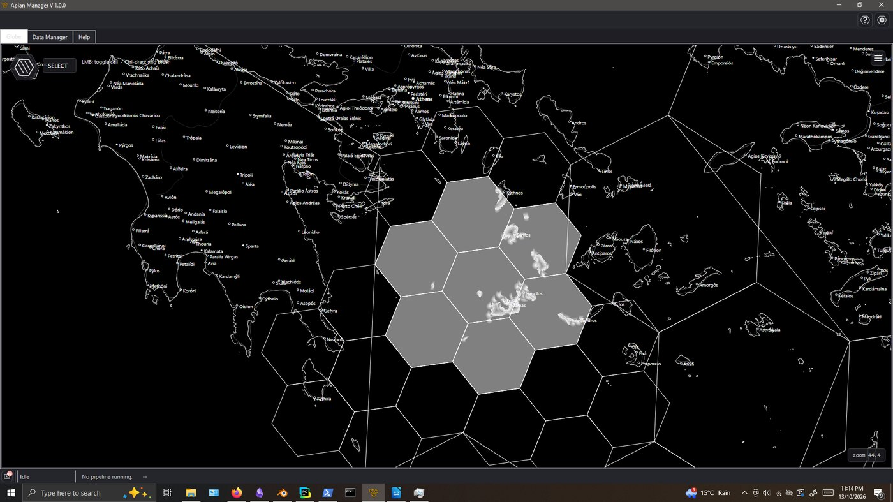
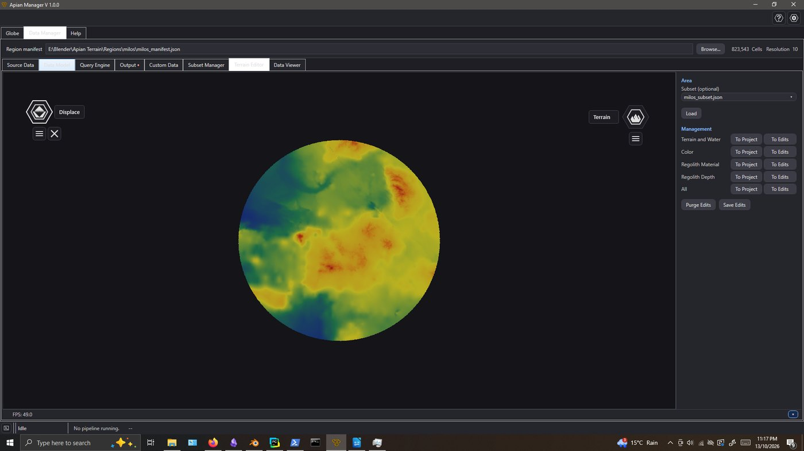
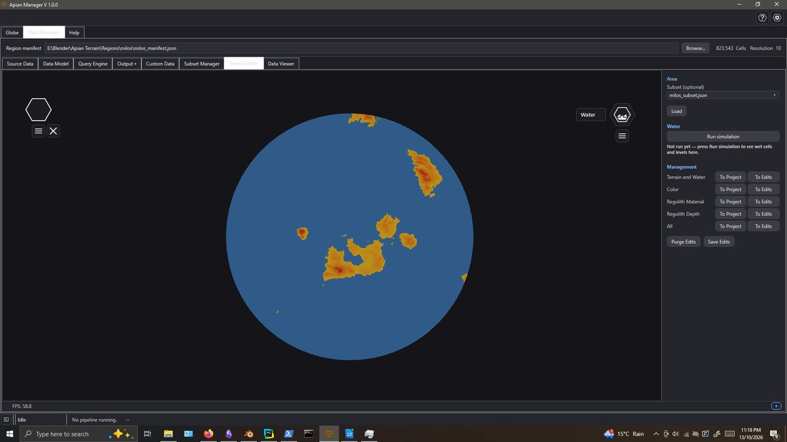
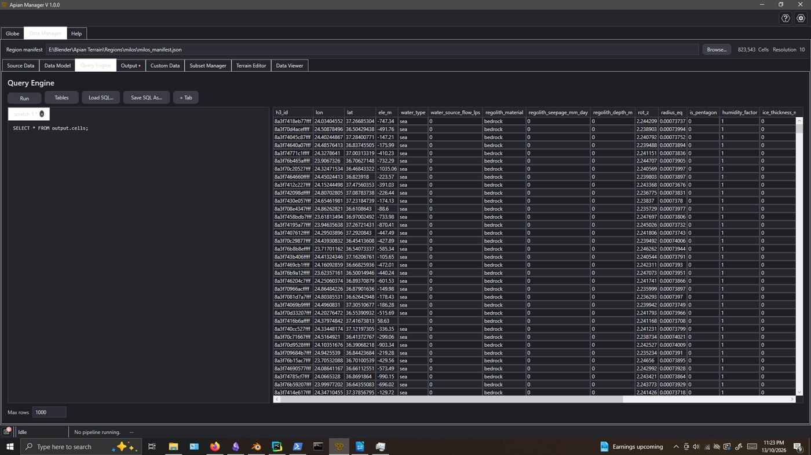
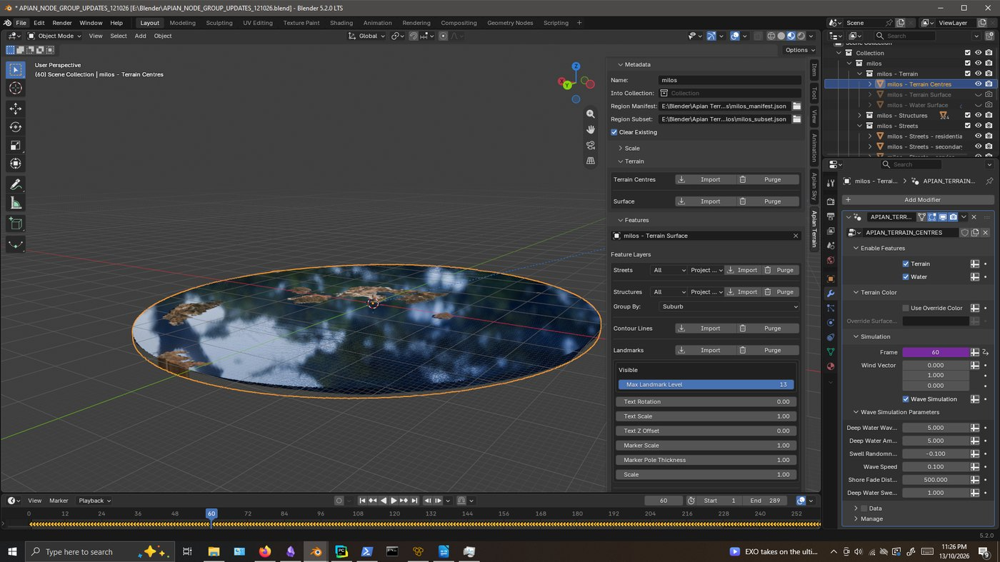
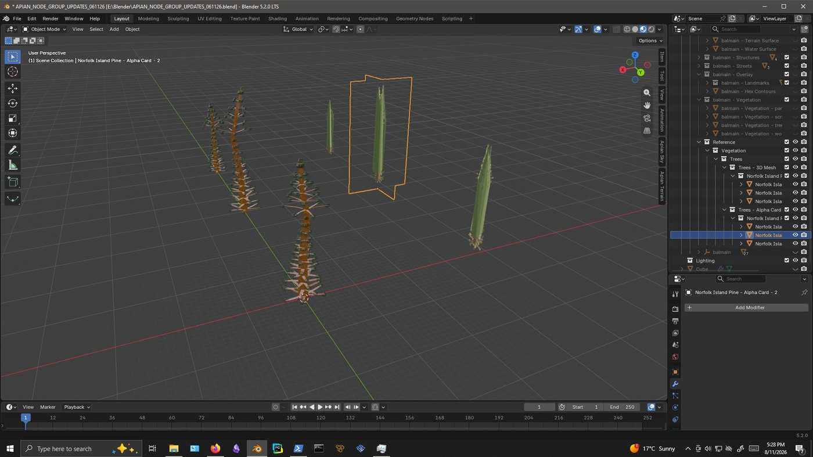

Apian Terrain fuses elevation, bathymetry, coastline, water simulation, procedural vegetation, structures, streets and satellite colour onto an H3 hex grid, then imports the whole region into Blender as native geometry. A Windows Manager app drives the entire build — no GIS expertise required.
Each layer is fetched, processed and fused onto the hex grid independently — import only what you want, re-run any stage, edit anything in between.
COP30 elevation and GEBCO bathymetry fused at the coastline, with terrain editing baked into the dataset.
Rivers, lakes and harbours with a baked flow simulation — animated water surfaces and shorelines out of the box.
Fourteen botanically-parameterised species — whorled conifers, gums, willows, shrubs, groundcover — baked as instanced 3D masters with wind-ready anchors.
OpenStreetMap buildings with generated roofs, bridges, streets and landmark labels — draped on the terrain automatically.
Every layer resolves to the same hex index — query, join and propagate across layers with SQL (DuckDB) and the Manager's Query Engine.
A thin add-on reads the unified dataset straight into geometry nodes — hex-tiled, materialled, and organised into collections.
The C#/.NET WPF Manager builds the dataset; the Blender add-on turns it into a scene.






Three stages, one dataset, one scene.
Select any region on the globe in the Manager. Apian fetches elevation, bathymetry, OSM features, imagery and climate data automatically.
The pipeline fuses every layer onto the H3 grid — water flow, procedural species, structures — and writes one compact unified dataset with a manifest.
Install the add-on, point it at the manifest, press Import. Terrain, water, vegetation and city appear as organised, node-driven geometry.
A solo-engineered stack, end to end.
Apian Terrain is available as a paid beta on Gumroad. The pipeline and Blender add-on are open source.